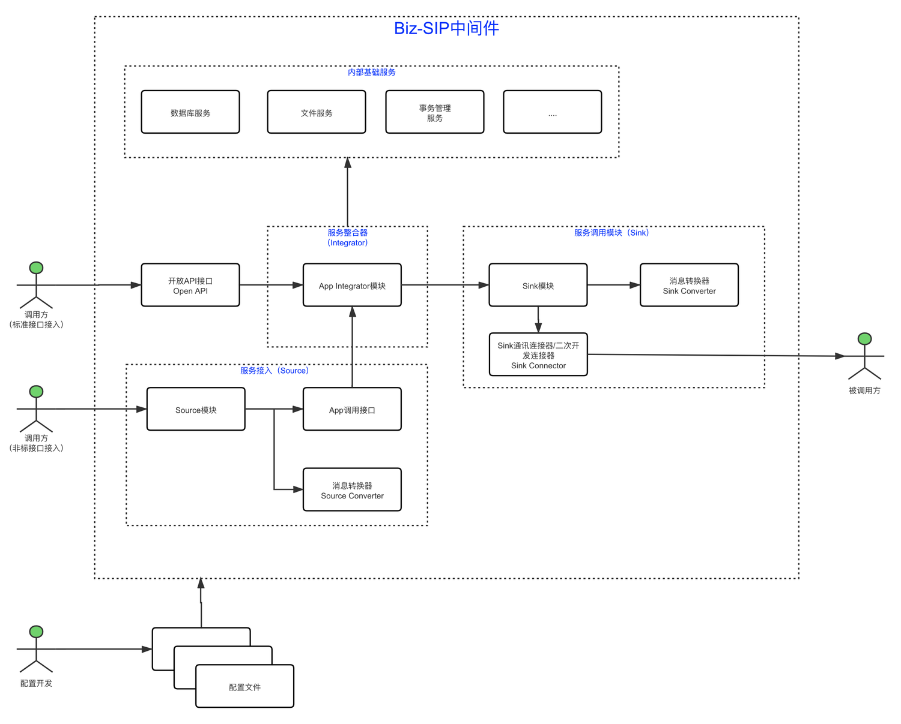
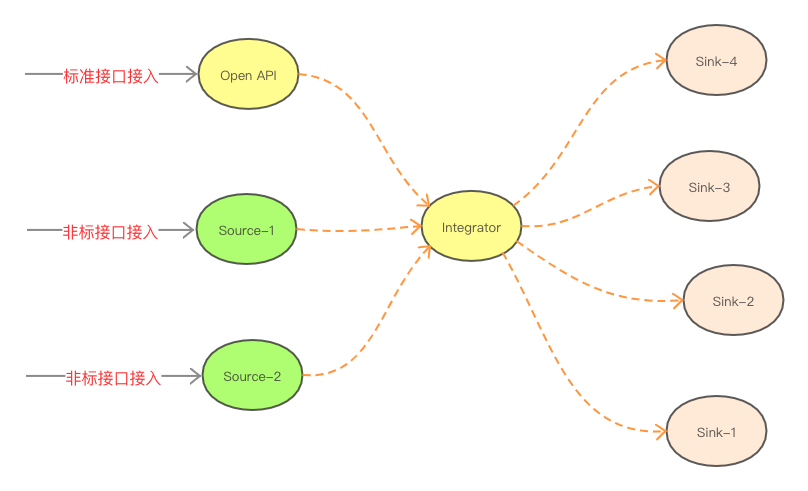
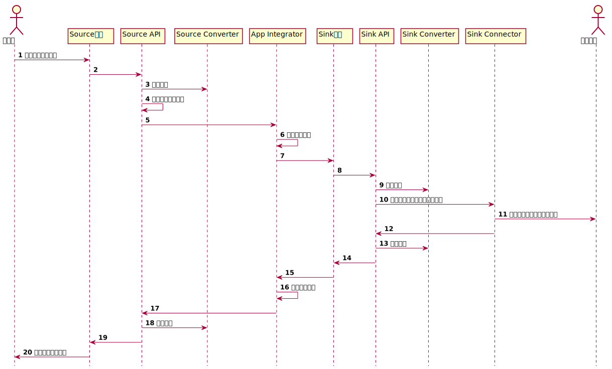
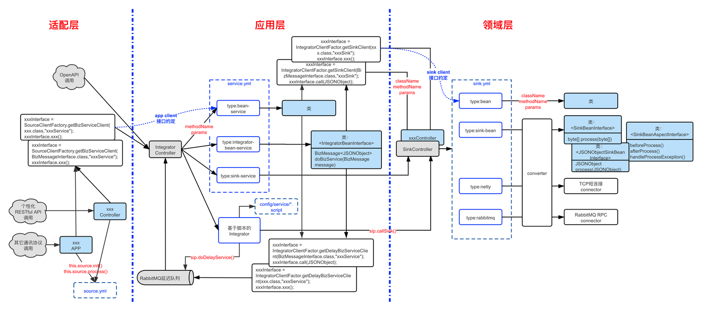
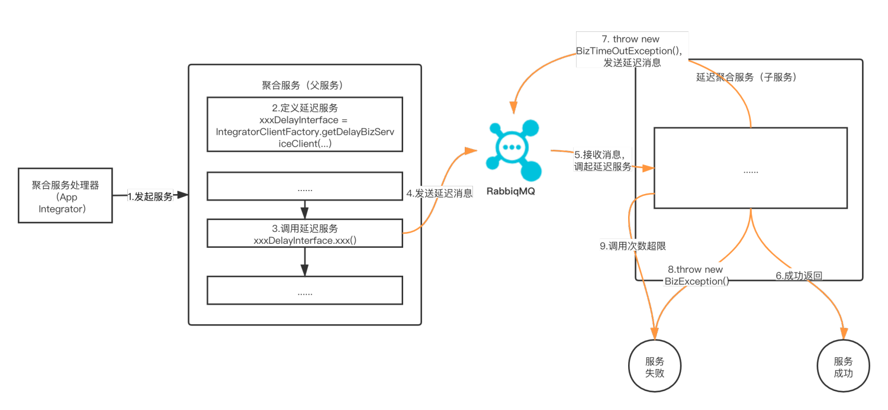

运行原理
介绍Biz-SIP中间件主要场景的运行机制。
一、系统运行机制概述
1 系统架构

整个Biz-SIP中间件系统主要包括：应用层服务聚合模块（app integrator）、适配层服务接入模块（source）、领域层服务调用模块（sink）、Open API接口和内部基础服务五大块，其中：
- 应用层服务聚合模块（app integrator）：负责服务的整合和编排，对Source模块接入的聚合服务，进行服务编排，并通过Sink模块接入要编排的服务。目前支持Script脚本服务整合和Java SDK服务整合模式。
- 适配层服务接入模块（Source）：负责聚合服务的接入，包括通讯协议适配和消息格式转换，并统一接入Integrator。Source模块中的消息格式转换器（Source Converter）支持XML、JSON、定长、有分隔符、8583等报文的解包和打包。
- 领域层服务调用模块（Sink）：统一被Integrator所调用，负责接入要编排的服务，包括和外部服务对接时的通讯协议适配和消息格式转换。Sink模块中的Sink通讯连接器（Sink Connector）支持微服务、消息中间件、TCP长短连接等多种接入方式；Sink模块中的消息格式转换器（Sink Converter）支持XML、JSON、定长、有分隔符、8583等报文。
- 开放API接口（Open API）：对外提供的标准的API接口，提供所有聚合服务的接入，后面是接入服务聚合器（Integrator）。
- 内部基础服务：内置数据库、日志、事务管理等常用的服务，由Integrator编排到聚合服务中。
2 处理流程
Biz-SIP中间件的服务接入和处理流程，主要有标准接口接入和非标接口接入二种，其中标准接口接入是采用中间件约定的RESTful接口，不存在接入端的异构通讯适配和异构消息适配，比较简单，而非标接口接入会涉及异构通讯适配和异构消息适配的处理。  这里以比较复杂的非标接口接入为例，一个简单的调用方应用通过Biz-SIP中间件调用一个被调用方应用后就直接返回的场景，来描述一下整个处理流程： 第1步：是适配层Source模块，针对调用方不同异构通讯协议的适配接入，既可以采用现成的通讯接入模块配置接入，也可以代码自行实现。 第2步：Source模块在接入消息后，会调用Source API接口的process()方法。 第3步：process()方法会根据消息转换配置，进行消息解包。通过消息解包，会把调用方应用的消息转换成Biz-SIP中间件采用的JSON消息格式。 第4步：process()方法中，还会根据解包后的消息，通过聚合服务断言规则来定位要调用的聚合服务ID，聚合服务断言规则是对应config/source.yml文件中的service.service-rules配置项。
注：第2、3、4步，可以无需调用Source API接口的process()，由开发人员自行编码实现，
第5步：调用应用层App Integrator，开始调用约定的聚合服务，这个接口和标准接口接入的接口是同一个接口。 第6步：服务流程编排，是根据聚合服务配置来进行服务调用的编排，目前支持Script服务聚合器、基于Java开发的服务聚合器； 第7步：根据服务编排，会调用领域层Sink服务。 第9步：消息打包，既可以代码自行实现，也可以配置Sink Converter来实现。通过消息打包，会把Biz-SIP中间件采用标准JSON消息格式，转换成外部被调用方的消息格式。 第10步：调用Sink Connector，既可以采用现成的通讯接入模块配置接入，也可以代码自行实现。 第11步：Sink Connector和被调用方应用通讯调用和交互。 第13步：消息解包，同第9步，既可以编码实现，也可以配置Sink Converter来实现，通过消息解包，会把外部被调用方返回的消息，转成Biz-SIP中间件的标准JSON消息格式。 第16步：Integrator继续执行后续的服务编排脚本。 第18步：消息打包，具体类似第3步消息解包的工作，会把Biz-SIP中间件响应回来的JSON消息格式转换成调用方应用的响应消息。 第20步：通过Source模块，将响应消息返回给调用方应用。
3 运行机制图
 上图中：
- 蓝色虚框所呈现的部分，主要是Biz-SIP中间件的配置文件。
- 蓝底黑字所呈现的部分，表示是需要Java代码开发的，涉及适配层、应用层和领域层。
- 蓝色虚箭头线所涉及的接口，就是不同层次之间需要互相依赖的接口定义。
二、应用层App Integrator
1 功能介绍
App Integrator服务整合器主要是对聚合服务进行内部服务和外部服务的编排处理，系统架构上支持多种模式的服务整合器，目前支持服务聚合编排模式包括：
- 基于Script脚本的服务编排：通过编写类JavaScript的脚本文件，来实现领域层服务的聚合和编排；
- 基于Java代码开发的服务编排：开发人员通过Java代码的编写，实现领域层服务的编排，支持2种类型的Java服务类：
- integrator-bean-service接口服务类：integrator-bean-service通过实现统一的接口来实现服务编排。
- bean-service接口服务类：bean-service提供更为灵活的接口定义来实现服务编排。
- 领域层服务的直接透传：通过配置sink-service，可以快速把领域层sink服务透传发布到前端的适配层source和OpenAPI接口。
2 调用接口
App Integrator对外提供标准API接口接入，接口规范如下：
| URL | http://{地址}:{端口}/api |
|---|---|
| HTTP请求头 | |
| - Content-Type | application/json |
| - Biz-Service-Id | 调用的聚合服务ID |
| 提交方式 | POST |
| 请求包 | JSON报文 |
| 响应包 | Biz-SIP内部标准消息（参见“Biz-SIP内部标准消息规范”） |
三、Source服务接入模块
1 功能介绍
适配层Source模块主要是对接外部和系统内部其它系统的服务接入。 主要功能主要有：
- 通讯协议的对接：服务接入模块（Source）负责外部调用方服务的通讯接入；
- 消息转换：把外部多种消息格式，转换成平台内部通过的JSONObject消息类型；
- 调用应用层的App Integrator进行服务编排。
并根据Source端定义的消息类型，调用消息类型所对应的消息转换器（Source Converter），转换器负责进行消息的格式转换，支持XML、JSON、定长、有分隔符、8583等报文的解包和打包。
2 运行流程
Source模块的运行流程如下：
- 通过模块配置或二次开发的通讯接口（可以调用配置好的connector，也可以代码自行实现），接入外部应用发来的消息报文；
- 对收到的消息进行解包，解包可以通过调用配置好的conveter，也可以在代码中自行编码实现，其中息格式转换配置是定义在source.yml中，并结合“config/converter”目录下的消息格式配置文件，实现对消息解包的配置化。
- 把解包好的消息，打包成JSON消息格式，发给Integrator；
- Integrator处理完成后，会用内部标准消息（BizMessage
）格式返回； - 对收到的消息进行打包，打包可以通过调用配置好的conveter，也可以在代码中自行编码实现。
- 通过第1步使用的通讯接口，把最终消息报文返回给外部应用。
四、Sink服务调用模块
1 功能介绍
Sink服务主要有二类：
- 一类是对接第三方应用；
- 另一类是领域层的交易处理模块。
Sink服务的功能主要是二个：
- 通讯协议的对接：Sink Connect负责和调用系统的通讯对接，支持微服务、消息中间件、TCP长短连接等多种接入方式；
- 消息格式的转换：Sink Converter负责调用服务消息的格式转换，支持XML、JSON、定长、有分隔符、8583等报文。
2 运行流程
Sink模块的运行流程如下：
- 收到Integrator发来的消息报文（参照服务端适配器接口规范）；
- 对收到的消息进行打包，打包可以通过调用配置好的conveter，也可以在代码中自行编码实现，其中息格式转换配置是定义在source.yml中，并结合“config/converter”目录下的消息格式配置文件，实现对消息打包的配置化。
- 根据Sink端约定的通讯协议类型，可以选择基于配置的Sink Connector，也可以代码自行开发通讯接口，和外部应用进行消息报文交互；
- 对外部应用返回的消息，进行解包，解包可以通过调用配置好的conveter，也可以在代码中自行编码实现；
- 把解包成功的JSONObject平台消息报文，返回给Integrator。
3 Sink服务类型
Sink目前支持4种Sink服务类型：netty、rabbitmq、sink-bean、bean。 其中netty和rabbitmq是开箱即用的Sink服务，通过配置接入参数，就能快速实现TCP短连接和RabbitMQ RPC连接。 sink-bean和bean服务类型，是提供Java开发框架，由Java开发人员来自行开发的，其中：
- sink-bean是基于报文消息的对接，一般用来对接采用报文通讯的第三方。
- bean是基于接口类的实现，接口比较严格，一般用来对接内部实现的交易处理系统。
五、延迟服务
延迟服务主要用于Saga分布式事务和SAF存储转发的处理，主要场景有：
- 重试通知：通知对方系统，直到对方给出明确的回复响应。
- 向前补偿：调用第三方服务后，超时没有响应，系统会后续发起查询上笔交易状态的查询交易，根据查询交易状态来决定继续完成后续服务步骤还是对以前服务步骤发起补偿（冲正）操作。
- 向后补偿：调用第三方服务后，超时没有响应，系统会立即发起针对此交易的补偿交易，补偿成功后，会对以前服务步骤依次发起补偿（冲正）操作；如果补偿失败，会置交易失败，由人工介入处理。
以上这几种事务场景，都是调用延迟服务的方式来实现的，调用方式主要有二种：
- Script脚本中调用：在脚本中通过“sip.doDelayService()”调用来实现。
- Java调用：通过“IntegratorClientFactor.getDelayBizServiceClient()”获得延迟服务调用句柄，来进行延迟服务的调用。
以Java调用为例，针对延迟服务的执行流程，如下图所示： 
- 适配层调用App Integrator后，会执行指定的聚合服务；
- 在Java编写的聚合服务中，会首先约定一个聚合服务调用的接口xxxDelayInterface，会声明接口类型、调用延迟间隔时间和调用次数；
- 在Java编写的服务中，可以通过前面声明的xxxDelayInterface接口，发起延迟服务的调用；
- 发起延迟消息后，在平台内部实现机制上，是通过发送RabbitMQ延迟消息的方式来实现的；
- 事务管理器在延迟服务接口约定的延迟时间后，会收到RabbitMQ消息，调起聚合服务（子服务）的处理；
- 如果执行成功，则延迟服务顺利完成，父服务和子服务都标记为成功；
- 如果在执行中抛出BizTimeOutException异常，则会结束当前延迟服务，等待延迟服务的再次唤起；
- 如果在执行中抛出其它BizException异常，则会结束当前延迟服务，标记父服务和子服务为失败，等待人工后续处理；
- 延迟服务唤起次数超限，也会会结束当前延迟服务，标记父服务和子服务为失败，等待人工后续处理。